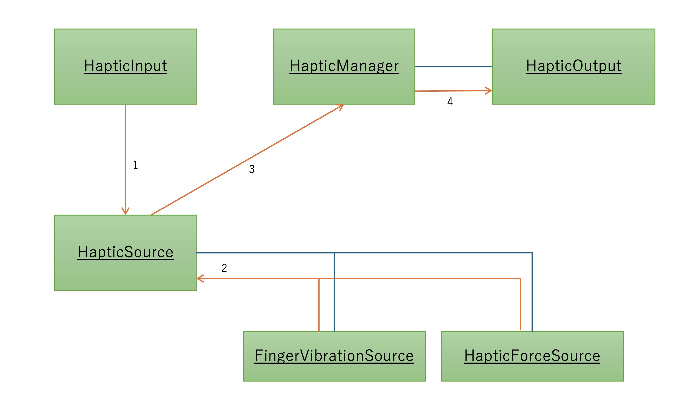
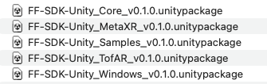

2. FF-SDK-Unityの概要
2.1. 触覚を再生するしくみ

FF-SDK-Unity 触覚再生フロー図
2.1.1. 基本コンポーネント
FF-SDK-Unityは以下のコンポーネントを提供します。
| コンポーネント | 役割 |
|---|---|
| HapticsInput | 触覚を知覚する入力点 例) 親指や人差し指の指先 |
| HapticsSource | 触覚を発生する物体 振動を発するFingerVibrationSourceと剪断強度を計算するHapticForceSourceを配下に持つ |
| HapticsOutput | 触覚を出力するデバイス 例) FeelFuseデバイスやシミュレーター |
| HapticsManager | 触覚入力から出力までを制御するコンポーネント |
2.1.2. 触覚の入力から出力までのフロー
- HapticInputがHapticSourceに干渉する。
- HapticSourceは配下のFingerVibrationSourceとHaticForceSourceから計算された触覚パラメータ（振動音生クリップや剪断再生用モーターの駆動量）を取得する。
- HapticeSourceは触覚パラメータをHapticsManagerへ送信する。
- HapticsManagerは触覚パラメータをHapticsInputへ送信する。HapticsOutputはFeelFuseデバイス等で触覚を再生する。
2.2. パッケージ構成
FF-SDK-Unityのパッケージには下記のものが含まれます。

| パッケージ | 内容 |
|---|---|
| Core | SDKコア機能 |
| MetaXR | Meta XR SDKとの連携機能 |
| TofAR | ToF AR SDKとの連携機能（開発・デバッグ支援機能） |
| Samples | サンプルシーン |
| Windows | USB有線接続版FeelFuse向けパッケージ、有償アセットへの依存が存在する |
2.3. フォルダ構成
FF-SDK-Unityのパッケージを全てUnityにインポートした場合のフォルダ構成は下記のようになります。

| フォルダ | パッケージ | 内容 |
|---|---|---|
| Commissure/HapticsSystem/Core | Core | FF-SDK-Unityコア機能 SDK動作に必須のファイル類 |
| Commissure/HapticsSystem/Devices | Core | デバイス依存機能 |
| Commissure/HapticsSystem/Devices.Windows | Windows | USB有線接続版FeelFuse向け機能 |
| Commissure/HapticsSystem/UI | Core | UI構築ヘルパー |
| Commissure/HapticsSystem/UI.MetaXR | MetaXR | Meta XR SDK 依存UI構築ヘルパー |
| Commissure/HapticsSystem/UI.TofAr | TofAR | ToF AR SDK 依存UI構築ヘルパー |